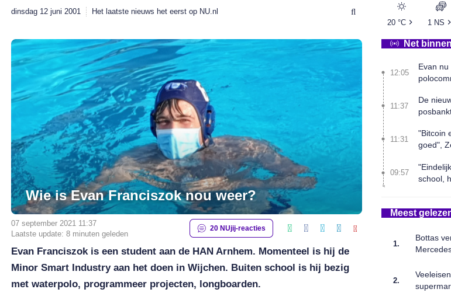
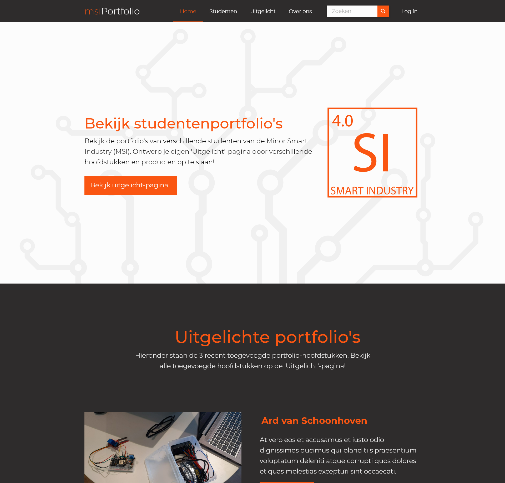
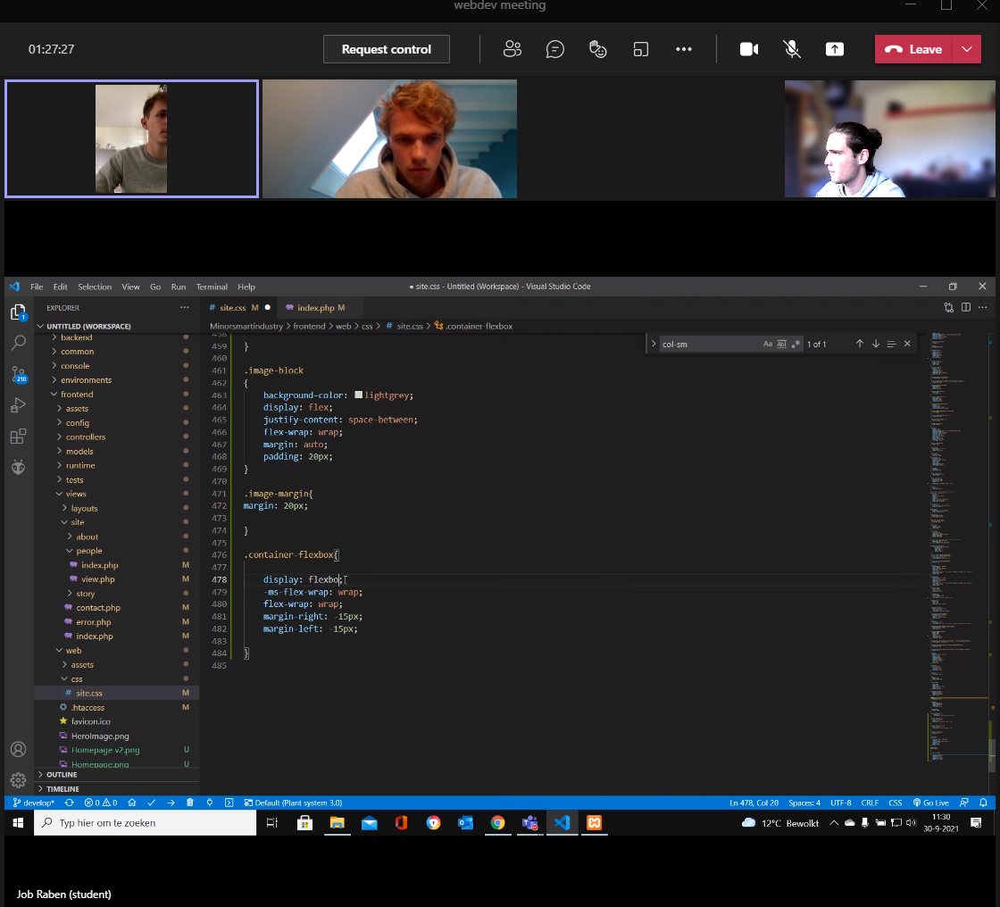

Deze week was de eerste les van Smart Connection. Hierbij hebben we kennis gemaakt met HTML en CSS. De opdracht
was het omvormen van een website en informatie over jezelf in deze website zet. Aangezien ik al vaker met HTML heb
gewerkt was dit niks nieuws en heb ik ook niet echt iets geleerd tijdens deze les.
Bewijsmateriaal

De opdracht in de les was het aanpassen van een website. Voor deze website heb ik nu.nl gebruikt. In de
afbeelding hiernaast is te zien wat het resultaat hiervan is geworden. De optie tijdens deze opdracht was om
dit of met een photoshop programma te doen of met de inspecteer modus in de browser daadwerkelijk met HTML en
CSS aan te passen. Ik heb hierbij voor de tweede optie gekozen. Om deze pagina te zien klik
hier.
2 sept 2021
Week 2
Deze week werd er tijdens de les gesproken over de HTML en CSS. Omdat ik dit al beheers heb ik deze les niet
gevolgd en heb ik een begin gemaakt aan de hoofdpagina van mijn portfolio website. Dit is de website waar je
momenteel op kijkt. Om dit te doen heb ik eerst in kaart gebracht wat voor een soort item er in mijn portfolio
moeten komen. Met dit plan in mijn hoofd ben ik begonnen met een hoofdpagina waarop mijn introductie filmpje kon
komen en ik de stijl van de website mee kon vast stellen.
Bewijsmateriaal
Ik was begonnen met de hoofdpagina van de website. Hiermee kon ik stijl bepalen die ik verder in de website
zal gaan gebruiken.
Zie ook de Github page voor de code van deze website
8 sept 2021
Week 3
Ook deze week ben ik niet naar de les gegaan aangezien ze het gingen hebben over JavaScript. Ook dit heb ik al op
mijn studie gehad. Hiervoor in de plaats ben ik begonnen met het design implementeren van de hoofdpagina van de
gezamelijke portfolio website. Dit
konden we pas doen nadat ik samen met de architecten de website lokaal op mijn computer werkend heb gekregen.
Bewijsmateriaal

De Architecten hebben gebruik gemaakt van het backend framework YII2. Met dit framework wordt veel van de
backend geautomatiseerd. Zo is het niet nodig om een inlog systeem te maken aangezien dit al wordt opgevangen
door het framework. Ook is het communiceren met de database een stuk makkelijker. Echter moet er wel meer
gebeuren om dit programma werkend te krijgen op een computer. Dit heb ik samen met Mitch gedaan. Hierna heb ik
het weer aan andere developers uitgelegd hoe het werkt.
Ook heb ik deze week het design van de hoofdpagina uitgewerkt met het YII2 framework. Het design was gemaakt
door het design groepje en het was onze taak om deze dynamisch te maken in de 4 weken die er nog over waren.
Hiervan was de hoofdpagina voor ons heel belangrijk aangezien dit de pagina is die de meeste mensen als eerste
zien als ze op de website kwamen. Ook konden we hiermee al iets van progressie tonen aan de rest van de klas.
16 sept 2021
Week 4
Deze week tijdens Smart Connection zouden we tijdens de les Databases krijgen. Hierbij ging het om SQL en noSQL
talen. Deze les heb ik net als voorgaande lessen niet gevolgd omdat ik deze kennis al bezit. In plaats hiervan heb
ik samen met het architectuur groepje data uit de database op de frontend gekregen door gebruik te maken van de
YII2, ons backend framework. Ook heb ik op donderdag de onervaren teamleden van de webdevelopment groep geleerd
hoe HTML en CSS werkt, omdat ze dit tijdens de les niet genoeg begrepen.
Week 5+
Ook deze week heb ik de les van smart Connections niet bijgewoond aangezien het ging over API’s. De dag na deze
les heb ik Giel en Job geholpen met HTML en CSS schrijven voor de portfolio website.
Bewijsmateriaal
--%
luchtvochtigheid
--°
Temperatuur
--%
Bodemvocht
Om iets te doen met een API heb ik tijdens Smart Technology gebruik gemaakt van de Blynk API. Deze informatie
haal ik op in deze website en toon dit in grafiek hiernaast. Dit word gedaan met JavaScript, deze code zorgt
er voor dat de data elke halve seconden opgevraagd wordt en op de juiste plek op deze pagina geplaatst wordt.
30 sept 2021

Voor de les van Smart Technology heb ik samen met Giel en Job in een Teams call gezeten om ze te helpen met
het werken aan de portfolio website. Hierbij hebben ze gewerkt aan de personen pagina. Het doel was de kaarten
waar alle studenten op staan zo maken dat het goed werkt als er veel van op de website komen te staan. Dit is
ze gelukt door gebruik te maken van flexbox een paar tips van mij.
Als de pagina nu word geladen worden er minder kaarten getoond naast elkaar.
30 sept 2021
U bent momenteel waarschijnlijk in de buurt van hier?
Deze informatie heb ik kunnen krijgen door naar
uw IP-adres te kijken. Vervolgens te kijken waar dit IP-adres zou horen te zijn en dit weer te geven op een
kaart.